icpc.latam->championships(LAC2025)
The 2025 ICPC Latin American Championship
- Hosted by Federal University of Bahia (UFBA)
- Official website pda2025.gruproufba.com.br
- Organizing ICPC region Brazil
- Dates March 12-17, 2025 (for ICPC Leaders)
March 13-17, 2025 (for Teams, including its guests)
Official Rules
Qualified Teams
Official Results
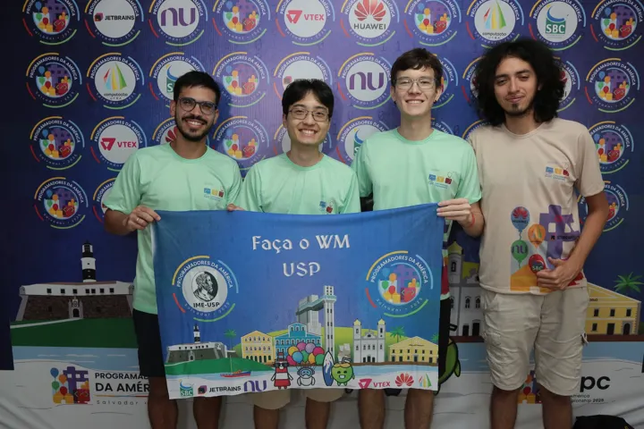
Faça o WM
- 🥇 Gold Medalist
- 🏆 Latin America Champion
- 🏆 Brazil Region Champion
- 🎖️ Qualified for the World Finals in Azerbaijan
- Problems solved: 9
| # | Team | Solved | Penalty | |
|---|---|---|---|---|
| 1 | 9 | 1660 | 🥇 🏆 Latin America Champion 🏆 Brazil Region Champion 🎖️ Qualified for the World Finals in Azerbaijan | |
| 2 | 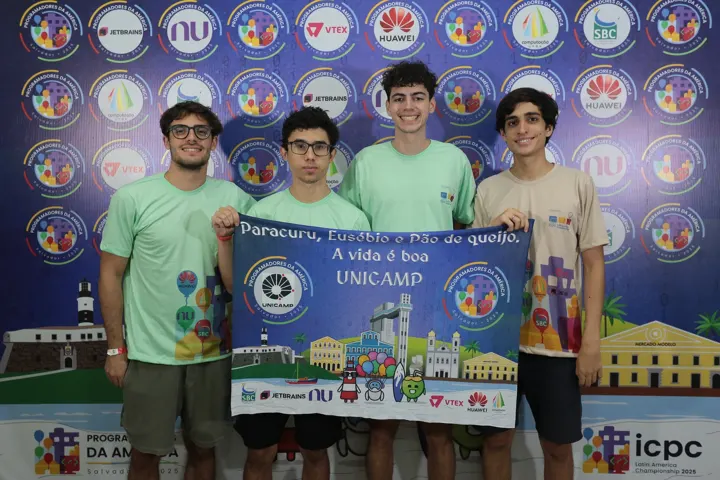  UNICAMP · Paracuru, Eusébio e Pão de queijo. A vida é boa UNICAMP · Paracuru, Eusébio e Pão de queijo. A vida é boa | 8 | 1175 | 🥇 🎖️ Qualified for the World Finals in Azerbaijan |
| 3 | 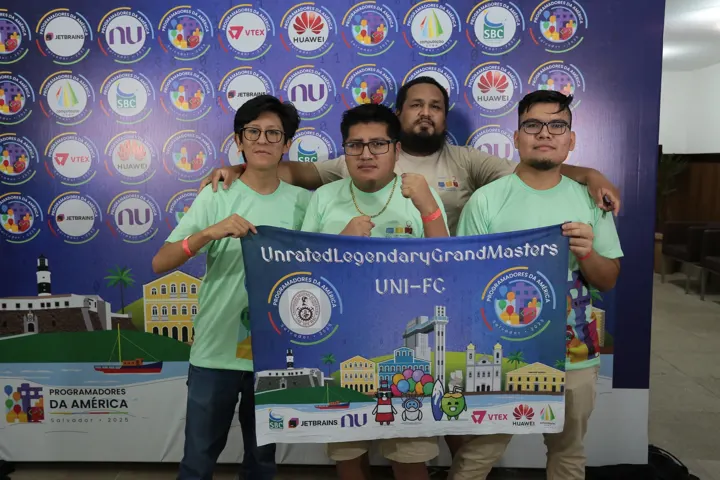  UNI-FC · UnratedLegendaryGrandMasters UNI-FC · UnratedLegendaryGrandMasters | 8 | 1222 | 🥇 🏆 South America South Region Champion 🎖️ Qualified for the World Finals in Azerbaijan |
| 4 | 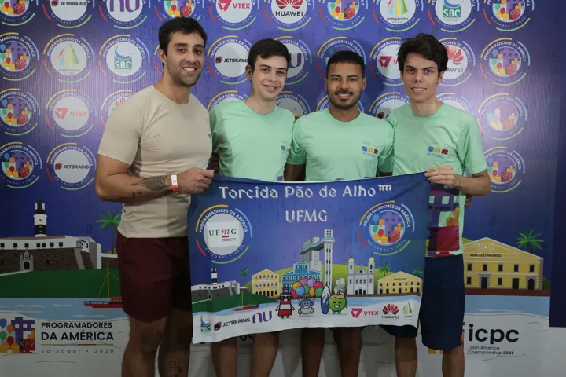 UFMG · Torcida Pão de Alho™ | 7 | 807 | 🥇 🎖️ Qualified for the World Finals in Azerbaijan |
| 5 | 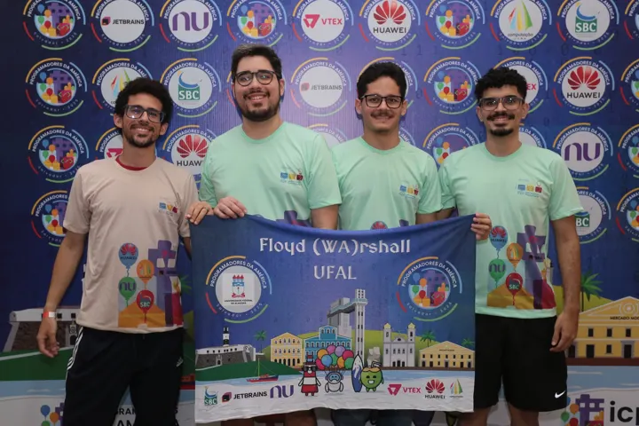 UFAL · Floyd (WA)rshall | 7 | 974 | 🥈 🎖️ Qualified for the World Finals in Azerbaijan |
| 6 | 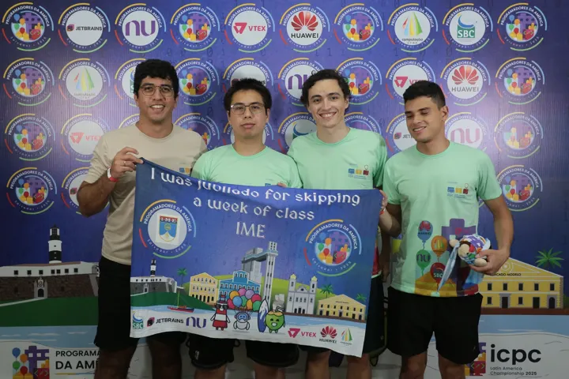 IME · i was jubilado for skipping a week of class | 7 | 1275 | 🥈 🎖️ Qualified for the World Finals in Azerbaijan |
| 7 | 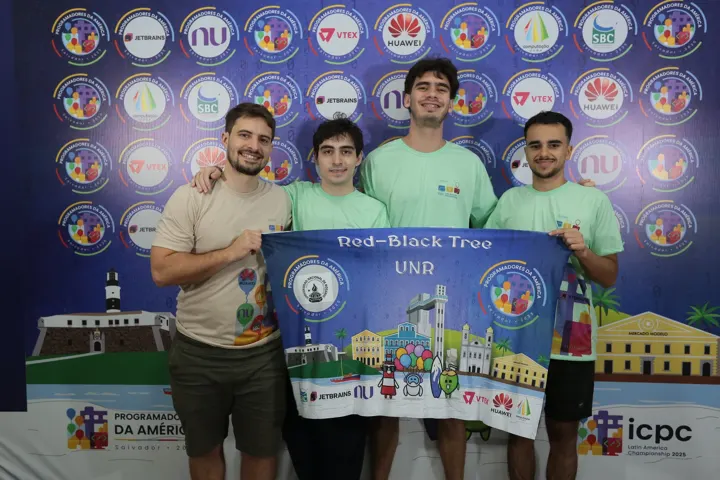  UNR · Red-Black Tree UNR · Red-Black Tree | 6 | 517 | 🥈 🎖️ Qualified for the World Finals in Azerbaijan |
| 8 | 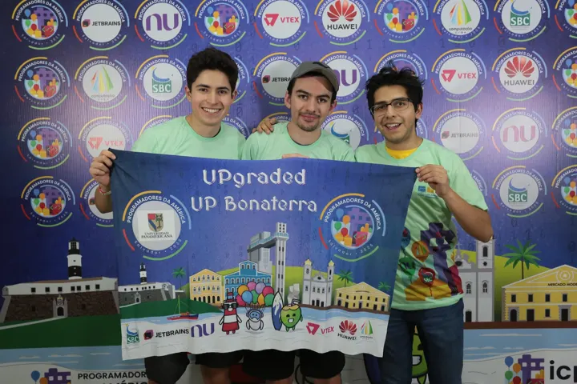  UP Bonaterra · UPgraded UP Bonaterra · UPgraded | 6 | 621 | 🥈 🏆 Mexico Region Champion 🎖️ Qualified for the World Finals in Azerbaijan |
| 9 | 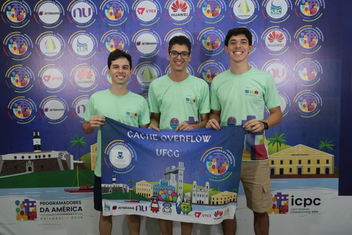 UFCG · CACHE OVERFLOW | 6 | 894 | 🥉 🎖️ Qualified for the World Finals in Azerbaijan |
| 10 | 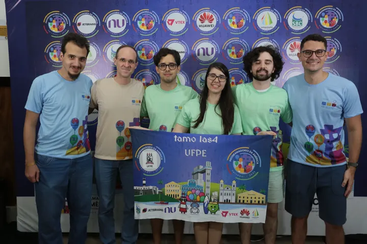 UFPE · tamo las4 | 5 | 847 | 🥉 🎖️ Qualified for the World Finals in Azerbaijan |
| 11 | 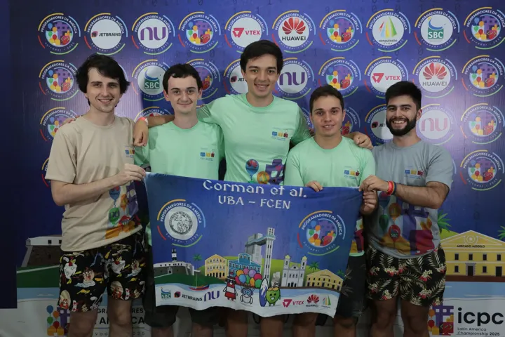 UBA - FCEN · Corman et al. | 5 | 935 | 🥉 🎖️ Qualified for the World Finals in Azerbaijan |
| 12 | 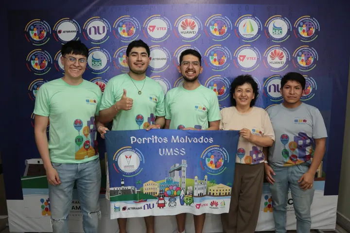  UMSS · Perritos Malvados UMSS · Perritos Malvados | 5 | 952 | 🥉 🎖️ Qualified for the World Finals in Azerbaijan |
Top 12 of 40 ranked teams. Full scoreboard and problemset at ScoreLatam.
The second Latin American Championship was hosted by UFBA in Salvador, Bahia. Maratona SBC reports 42 participating teams, 13 of them Brazilian (the final scoreboard lists 40 ranked teams). The champion, USP's “Faça o WM”, solved 9 problems.
At the 2024/25 ICPC World Finals in Baku, Azerbaijan (August 31 - September 5, 2025), 18 Latin American teams took part. UFMG solved 6 problems and was the best Latin American team.
Source: Maratona SBC de Programação – history and ScoreLatam